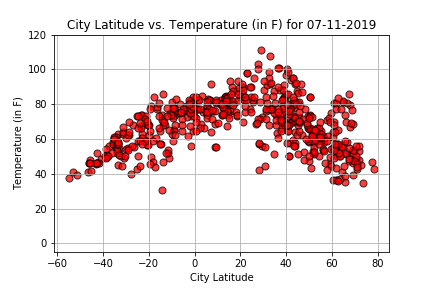

Temperature vs. Latitude

The visualization clearly shows that there is a relationship between temperature and latitude. Higher temperatures were indeed recorded closer to the center of the plot (the equator). Although many would expect temperatures to peak at around the equator, the highest temperatures were recorded in cities with latitudes between 20 and 40 degrees N. This makes sense, as July is summer for the northern hemisphere, so the Earth's axis is tilted. The skewed curve also reinforces the fact that there are more cities with populations above 500 that have weather stations in the northern hemisphere than in the southern hemisphere.